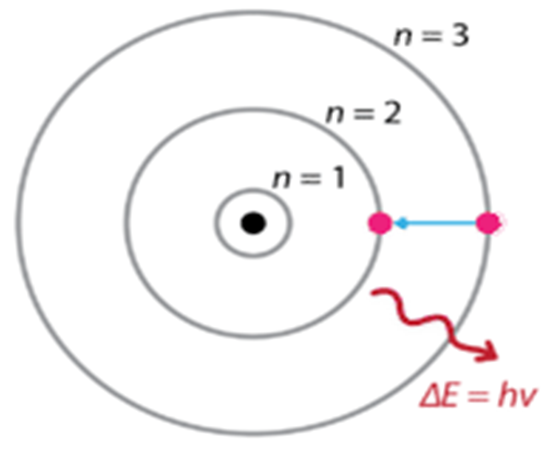

৫. বোরের পরমানু মডেল :
পরমাণুর গঠন ও একইসাথে পারমাণবিক বর্ণালি ব্যাখ্যার জন্য নীলস বোর ১৯১৩ খ্রিস্টাব্দে তার বিখ্যাত পরমানু মডেল প্রকাশ করেন। বোর পরমাণু মডেলের স্বীকার্যগুলো নি¤œরূপ :
(১) ইলেকট্রনের স্থির কক্ষপথ বা শক্তিস্তরের ধারণা সম্পর্কীয় স্বীকার্য
(২) ইলেকট্রনের কৌণিক ভরবেগ সম্পর্কীয় স্বীকার্য
(৩) শক্তির শোষণ বা বিকিরণ এবং বর্ণালি সৃষ্টি সম্পর্কীয় স্বীকার্য
প্রথম স্বীকার্য (ইলেকট্রনের স্থির কক্ষপথ বা শক্তিস্তরের ধারণা সম্পর্কীয়) :
পরমাণুর নিউক্লিয়াসের বাইরে নিউক্লিয়াসকে কেন্দ্র করে কতিপয় নির্দিষ্ট শক্তির বৃত্তাকার কক্ষপথ আছে। এই কক্ষপথে ইলেকট্রনগুলো সর্বদাই নিউক্লিয়াসের চারদিকে আবর্তন করে । কক্ষপথগুলো নিউক্লিয়াস থেকে ভিন্ন ভিন্ন দূরত্বে অবস্থিত ।
ইলেকট্রনগুলো এসব বৃত্তাকার কক্ষপথে আবর্তনকালে যতক্ষন তারা একই কক্ষপথে থাকবে ততক্ষন তারা কোন শক্তি শোষণ বা বিকিরণ করবে না। এই কক্ষপথগুলো স্থির কক্ষপথ বা শক্তিস্তর নামে পরিচিত।

দ্বিতীয় স্বীকার্য (ইলেকট্রনের কৌণিক ভরবেগ সম্পর্কীয়) :
স্থির কক্ষপথে আবর্তনরত ইলেকট্রনের কৌণিক ভরবেগ য/২π এর অখন্ড বা পূর্ণ সংখ্যার গুণিতক হয়। অর্থাৎ
ইলেকট্রনের কৌণিক ভরবেগ, সাৎ = হ দ্ধয/২π
যেখানে স = ইলেকট্রনের ভর
া = ইলেকট্রনের রৈখিক বেগ
ৎ = কক্ষপথের ব্যাসার্ধ
হ = অখন্ড সংখ্যা = ১,২,৩,............
য = প্লাংকের ধ্রæবক = ৬.৬২৬ দ্ধ ১০-৩৪ ঔ ং
তৃতীয় স্বীকার্য (শক্তির শোষণ বা বিকিরণ এবং বর্ণালি সৃষ্টি সম্পকীয়) :
যখন কোন ইলেকট্রন একটি কক্ষপথ বা শক্তি স্তর হতে অন্য কক্ষপথ বা শক্তিস্তরে লাফ দেয় তখন ইলেকট্রন দ্বারা নির্দিষ্ট পরিমাণ শক্তি শোষিত বা বিকিরিত হয়।
ইলেকট্রন যদি নি¤œ শক্তি স্তর থেকে উচ্চতর শক্তি স্তরে লাফ দেয় বা উন্নীত হয় তখন ইলেকট্রন দ্বারা শক্তি শোষিত হয়। আবার যখন ইলেকট্রন উচ্চ শক্তিস্তর থেকে নি¤œ শক্তিস্তরে লাফ দেয় বা নেমে আসে তখন ইলেকট্রন শক্তি বিকিরণ করে।
যদি নি¤œতর ও উচ্চতর শক্তি স্তরের শক্তি যথাক্রমে ঊ১ ও ঊ২ হয় তবে ইলেকট্রন দ্বারা
বিকিরিত বা শোষিত শক্তি ∆ঊ = ঊ২ ঊ১ -------- (১) , প্লাংকের সূত্রানুযায়ী, ∆ঊ = যυ , যেখানে য = প্লাংকের ধ্রæবক এবং υ = কম্পাংক
৬. বোর পরমাণু মডেলের সীমাবদ্ধতা :
বোর পরমাণু মডেল আধুনিক পরমাণু মডেল হলেও এটিতে কিছু ত্রæটি বিদ্যমান। এ ত্রæটিগুলি নি¤œরূপ:
৭. বোর পরমাণু মডেল ও রাদারফোর্ডের পরমাণু মডেলের তুলনা :